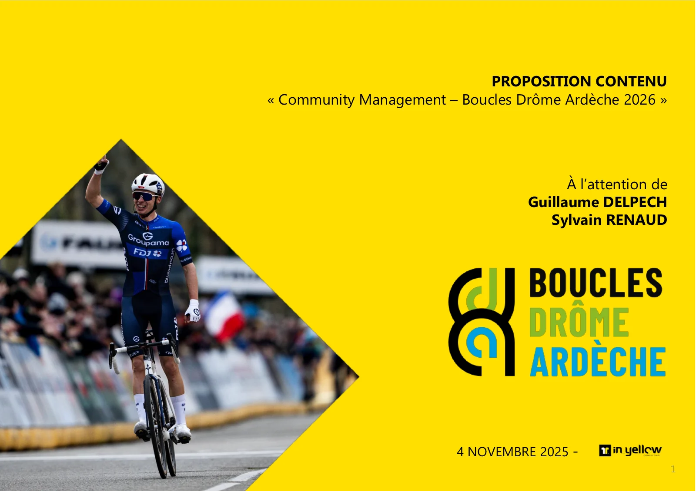
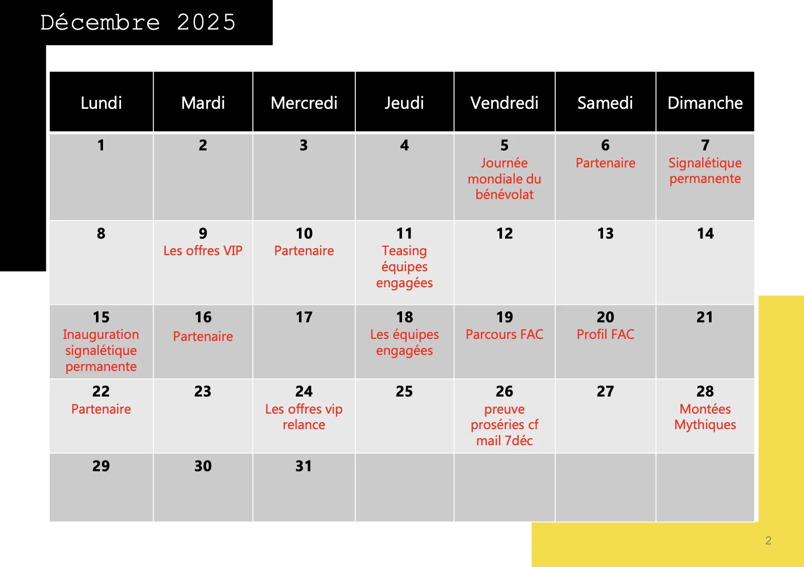

01
J'ai présenté une stratégie
J'ai structuré ma proposition autour d'objectifs clairs, puis d'un calendrier mois par mois : un thème par jour, des rendez-vous partenaires réguliers et une montée en puissance jusqu'à la course (28 février – 1er mars 2026).

